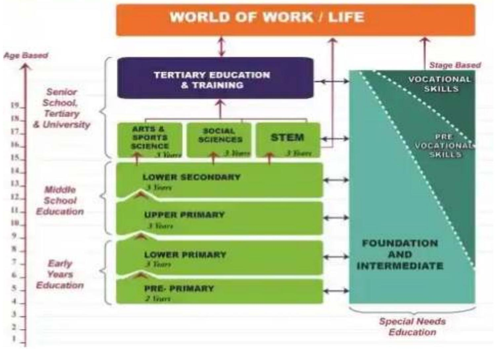

STRAND 1.0: BASIC EDUCATION CURRICULUM FRAMEWORK
SUBSTRAND 1.1: OVERVIEW OF THE BECF
Key areas covered
- The competency Based Curriculum
- Vision and mission statement of BECF
- The National goals of education in Kenya
- Organization of BECF
- Pillars of BECF
- Values in BECF
- Pertinent and contemporary issues(PCIs) in BECF
- Guiding principles of BECF
Facilitator's Notes
Meaning of Competency Based Curriculum
The Competency Based Curriculum focuses on acquisition of competences to enable the learner to cope with life challenges.
Vision and mission of BECF
Vision statement
- The vision of the basic education curriculum reforms is to enable every Kenyan to become an Engaged, Empowered, and Ethical Citizen.
- Learners are facilitated to develop to be useful members of society.
Mission statement
- The mission is Nurturing Every Learner's Potential
- All learners have abilities that can be nurtured for success. Identifying every learner's potential and nurturing the potential is central to CBC.
The National goals of education in Kenya
National goals of education are statements that describe the aspirations of a country and the needs of the society that are to be met through education.
The Framework is anchored towards achieving the 8 National Goals of Education. Education in Kenya should:
- Foster nationalism, patriotism, and promote national unity
Kenya's people belong to different communities, races and religions and should be able to live and interact as one people.
Education should enable the learner acquire a sense of nationhood and patriotism. It should also promote peace and harmonious co-existence.
- Promote social, economic, technological and industrial needs for national development
Education should prepare the learner to play an effective and productive role in the nation
- Social Needs-Education should instil social and adaptive skills in the learner for effective participation in the family, community, national, regional and international development.
- Economic Needs-Education should prepare a learner with requisite competences that support a modern and independent growing economy. This should translate into high standards of living for every individual.
- Technological and Industrial Needs-Education should develop in the learner necessary competences for technological and industrial development for the nation in tandem with global trends.
- Promote individual development and self-fulfilment
Education should provide opportunities for the learner to develop to the fullest potential.This includes development of one's interests, talents and character for positive contribution to the society
- Promote sound moral and religious values
Education should promote acquisition of national values as enshrined in the Kenya Constitution. It should be geared towards developing a self-disciplined and ethical citizen with sound moral and religious values
- Promote social equity and responsibility
Education should promote social equity and responsibility. It should provide inclusive and equitable access to quality and differentiated education; including for learners with special educational needs and disabilities.
Education should also provide the learner with opportunities to develop and practice shared responsibility and accountability through community service learning.
- Promote respect for and development of Kenya's rich and varied cultures
Education should instil in the learner appreciation of Kenya's rich and diverse cultural heritage. The learner should value own and respect other people's culture as well as embrace positive cultural practices in a dynamic society.
- Promote international consciousness and foster positive attitudes towards other nations
Kenya is part of the interdependent network of diverse peoples and nations. Education should empower the learner to respect, appreciate and participate in the opportunities within the international community.
Education should also enable the learner to operate within the international community with full knowledge of the obligations, responsibilities, rights and benefits that this membership entails.
- Promote positive attitudes towards good health and environmental protection
Education should inculcate in the learner the value of physical and psycho-social well-being for self and others. It should promote environmental preservation and conservation, including animal welfare, for sustainable development.
Organization of the BECF
- The education system in Kenya has changed from 8:4:4 to 2:6:3:3:3
- Basic Education is organized into three (3) levels: Early Years Education, Middle School Education and Senior School.
- Level 1-Early years comprise of pre primary 1 and 2 and lower primary ( grade 1,2 and 3.)
- Level 2-Middle school comprise of upper primary (grade 4,5 and 6) and junior secondary school (grade 7,8 and 9.)
- Level 3-Senior school comprise of senior secondary school(grade 10,11 and 12) and tertiary education of 3 years.
ORGANIZATION OF BASIC EDUCATION
Pillars of BECF
There are Three Pillars of CBC
- Values
- Guiding Principles
- Theoretical Approaches
Core values in BECF
The values identified and integrated in the curriculum are;
- Love
- Responsibility
- Respect
- Unity
- Peace
- Patriotism
- Social justice
- Integrity
How Values are Integrated in the Curriculum:
- Mainly through infusion and selection of learning environment and suggested learning experiences
- Guidance and Counselling programmes
- VBE will be implemented through Whole-School Approach which will involve learners, teachers, support staff, Board of Management, family members, wider school community and relevant stakeholders
Pertinent and Contemporary Issues(PCIs)
- Pertinent - having a clear decisive relevance to thematter at hand
- Contemporary - marked by characteristics of the present period; thus being, MORDEN, CURRENT
Children are faced with a myriad of challenges and issues owing to the social-cultural and economic dynamics in the society.
- The Competence-Based-Curriculum calls them Pertinent and Contemporary Issues
- Previously being referred to as emerging issues and/or Cross-cutting issues.
- Learner-centered education goes beyond the subject content.
- It instills appropriate competencies the learner requires in order to effectively address the PCIs of everyday life; thereby leading a fulfilled life as well as becoming a productive member of the society.
Examples of PCIs
- Citizenship education - includes Peace education, Integrity, Ethnic and racial relations, social cohesion, Patriotism and good governance, child's rights, child care and protection
- Health education - includes HIV and AIDS, Alcohol and Substance use, Life style diseases, personal hygiene, Communicable and chronic diseases e.g. COVID-19
- Life Skills & Human sexuality - includes Life skills education and human sexuality
- Education for Sustainable Development (ESD) -includes Environmental Education, Disaster Risk Reduction (DRR), Safety and security Education (small arms, human trafficking, Poverty eradication, Countering terrorism, radicalization,) Gender and Animal Welfare Education
Mainstreaming PCIs in CBC
PCIs have been mainstreamed in the three dimensions of the curriculum, that is:
- The Formal;
- The Non-Formal
- The In-formal.
Note: The mainstreaming of PCIs has to be deliberate and based on a conscious effort. PCIs become apart of the content being delivered.
Formal Dimension
A relevant and suitable sub strand or sub theme in a learning area/subject is identified where PCIs can appropriately be incorporated and taught alongside the subject matter.
Example:
Learning area: Social Studies (Grade 4)
Strand: Natural and Built Environment
Sub strand: Physical features in the County
Learning Outcome: (c) adopt responsible behaviour to conserve the physical features.
PCIs: Promotion of environmental conservation as learners appreciate the natural and built environment in the County.
Non-formal
These are organized, structured and systematic learning activities (NFPs) that take place in school. They support acquisition of knowledge, values and skills learnt in class.
Informal
This refers to the Knowledge, Attitudes and Skills or behaviour acquired by learners from the social interaction with members of the school community.
Exemplary behaviours and appropriate values can easily be emulated.
The Guiding principles in BECF
The Framework is based on the following guiding principles:
- Opportunity
- Excellence
- Diversity and Inclusion
- Parental Empowerment and Engagement
- Community Service Learning
- Differentiated Curriculum and Learning
- Opportunity
In order to achieve the reforms' vision and mission, the curriculum provides learners with a variety of opportunities to enable them to identify their needs, talents and potential.
This will enable them to participate in the world of work and the development of the nation.
The emphasis will be on equal access to education for all.
This will enable learners to enjoy learning and reduce wastage in terms of learners leaving school because the curriculum is not relevant to their needs.
- Excellence
Every learner will be nurtured to excel in their areas of greatest interest and ability.
The Framework values excellence and competitiveness rather than raw competition for examination grades.
This will play a role in helping to reduce the challenge of malpractice in examinations because each learner will be guided to excel in their area of interest and ability.
- Diversity and Inclusion
There are two dimensions in the guiding principle of diversity and inclusion.
First, the Framework will guide learners to appreciate Kenya's diversity in terms of race, ethnicity, gender, language, culture, and religion.
The second dimension relates to the fact that learners are different in terms of their learning needs and abilities and these differences need to be respected and valued within an inclusive learning environment.
Inclusion will entail ensuring that all learning institutions accommodate all learners regardless of their physical, emotional, intellectual, or any other need.
It involves provision of reasonable accommodation characterized by flexibility, responsiveness and support.
The Framework recognises that not all learners are academically gifted but considers every learner's social and cognitive capabilities, their needs and desires, and respects the differences in the way children learn.
The ultimate aim is to guarantee basic education for every learner according to their abilities and needs.
The curriculum reforms should address the needs of children and youth who are out of school, and adults, to increase their access to and participation in education, and hence, raise their literacy levels for personal and national social economic development.
- Differentiated Curriculum and Learning
Differentiated curriculum and learning builds on the principle of diversity and inclusion.
It ensures that the curriculum content and instructional approaches are appropriate for each learner.
It provides space for teachers to adapt the curriculum to suit the learner.
It does not demand that every learner learn the same content in the same way, in the same number of hours and at the same time.
- Parental Empowerment and Engagement
Parents play a very important role in determining the success of a child's education.
They have a shared responsibility with schools to provide an enabling environment that is conducive to learning and which motivates the child to achieve their full potential.
The Framework provides opportunities for schools to empower parents to contribute to the learning outcomes for their children and to be engaged at all tiers and levels of basic education.
- Community Service Learning
Involving students in community service is a form of experiential education that enables students to apply their knowledge and skills in a different setting.
Teachers then support students to analyse what they have learned by taking part in this activity and how it might be applied to their academic and personal development.
Community service learning entails a balanced emphasis on both students' learning and addressing real needs in the community.
Learning outcomes are linked to meaningful human, safety, educational, and environmental needs that are co-determined with community partners and service recipients.
The service experience is brought back to the classroom to enhance learning.
Learners work on real problems that make academic learning relevant while simultaneously enhancing their social skills, analytical ability, civic and ethical responsibility, self-efficacy, and career development.
How the Principles have been applied in the curriculum:
- Pathways open opportunity for different categories of learners
- Stress on excellence in all teaching and learning
- Parents are engaged through extended learner activities
- Varied activities are suggested to cater for the different learning styles, Programmes on PEE, CSL
Extended work
Task 1: Conduct research and compile a report on the organization of the 2:6:3:3:3 education system in Kenya and analyze the learning areas per each level.
Task 2: Critically analyze the justification of the inclusion of the following in the BECF
- Values
- PCIs
- Core competencies
Task 3: Analyze the reasons for inclusion of community service learning and parental engagement and participation in the current education framework.
SUBSTRAND 1.2: THEORITICAL FRAMEWORK IN BECF
Key areas covered
- Behavioral theories
- Cognitive theories
- Social theories
Facilitator's Notes
A theory is an abstract general explanation of observations or a subject under study that can be relied upon to provide guidance for practice.
It attempts to predict behaviour or reach a reasonable and general set of explanations for an underlying issue.
The Basic Education Curriculum Framework is underpinned by several theories generally categorized as behavioral, cognitive and social theories.
a) Behavioral theories
1. Instructional Design Theory
- This theory offers explicit guidance towards a new curriculum that explains how to help students learn and develop in the wake of emerging globalization.
- The theory is based on both intrinsic and extrinsic motivation towards learning by learners based on the opportunities they get.
- An instructional design model provides guidelines to organize appropriate pedagogical scenarios to achieve instructional goals.
- Instructional design can be defined as the practice of creating instructional experiences to help facilitate learning most effectively.
- The theory is more than a process; that process, and resulting product, represent a framework of thinking
- Instructional design models describe how to conduct the various steps.
- These steps involve instructional design process.
- The models help trainers and educators to guide and plan the overall process.
- It states that the instructional process should be intended to be an interactive process of planning outcomes, selecting effective strategies for teaching and learning, choosing relevant technologies, identifying educational media and measuring performance.
- Instructional design theory is design-oriented because it focuses on the means to attain given goals for learning and offers guidelines on methods to use in different situations in curriculum implementation.
- Values play an important role in instructional design theory. They underlie both the goals the curriculum pursues and the methods it offers to attain the goals.
- All these are articulated in this BECF which takes cognizance of the place of values as an anchor for the pillars of the curriculum.
- The BECF also provides a vision for the reforms and engages critical stakeholders and policy makers to identify with it.
- This provides a strong momentum for change in achieving the reforms' vision.
2.Visible Learning Theory by John Hattie
- He observes that globally, fundamental changes in education systems have important implications for curriculum reform.
- Learners need to be able to think about and solve problems, work in teams, communicate through discussions, take initiatives and bring diverse perspectives to their learning.
- In addition, students need to learn more, yet they have little time available to learn it.
- Learners also need to demonstrate the impact of the achievement of national goals of education.
- Visible learning means an enhanced role for teachers as they become evaluators of their own teaching.
- Hattie asserts that visible learning and teaching occurs when teachers see learning through the eyes of students and help them become their own teachers.
- It entails making student learning visible to teachers so that they can know whether they are having an impact on this learning, this is an important component of becoming a lifelong learner. This resonates with the Sustainable Development Goals.
- The 'learning' part of visible learning is the need to think of teaching with learning in the forefront and with the idea that we should consider teaching primarily in terms of its impact on student learning.
- When the teaching is visible the student knows what to do and how to do it. When the learning is visible the teacher knows if learning is occurring or not.
- Teaching and learning are visible when the learning goal is not only challenging but is explicit. Furthermore, both the teacher and the student work together to attain the goal, provide feedback, and ascertain whether the student has attained the goal.
- Evidence shows that the greatest effects on student learning come when not only the students become their own teachers (through self-monitoring, and self-assessment), but when the teachers become learners of their own teaching.
- In successful classrooms, both the teaching and learning are visible.
- This theory is important in designing a competency based curriculum.
- It provides directions on the nature of engagement in the learning process between the teacher, the learner and the environment.
- It also provides a basis for designing a formative and criterion referenced assessment, which is the bedrock of a competency-based curriculum.
b) Cognitive/Constructivism Theories
Constructivist theorists argue that human beings construct all knowledge while participating in different mental and physical experiences.
In constructivism, the learner builds a personal interpretation of the world based on experiences and interactions and learning is a process of constructing knowledge rather than acquiring or communicating it.
i) John Dewey's Social Constructivism
- Dewey felt that the curriculum should ultimately produce students who would be able to deal effectively with the modern world.
- Therefore, curricula should not be presented as finished abstractions, but should include the child's preconceptions and should incorporate how the child views his or her own world.
- Dewey uses four instincts, or impulses, to describe how to characterize children's behaviour.
- The four instincts according to Dewey are social, constructive, expressive, and artistic. Curricula should build an orderly sense of the world where the child lives.
- He hoped to use occupations to connect miniature versions of fundamental activities of life with classroom activities.
- The way Dewey hoped to accomplish this goal was to combine subject areas and materials.
- By doing this, he made connections between subjects and the child's life.
- According to Dewey, education is growth and not an end in itself, and thus the curriculum should arise from students' interests and should be hands-on and experience based rather than abstract.
- This theory underscores the emphasis of continuous, participatory and experiential learning.
- This is an emphasis of the practical aspect of the basic education curriculum in the curriculum reforms.
ii)Vygotsky's Social-Cultural Development Theory
- Vygotsky's social-cultural theory emphasized that teaching and learning are highly social activities and that interactions with teachers, peers and instructional materials influence the cognitive and affective developments of learners.
- The theory argues that learning takes place when learners interact with each other, or have other social contact.
- Learners negotiate meanings with people in the environment, and they achieve goals through interacting, both explicitly and implicitly, with the teacher, peers, materials, and atmosphere embedded in the context.
- This theory underpins the basic education curriculum framework in terms of conceptualising and designing the necessary paradigm shifts that will facilitate creating rich learning environments which will stimulate all learners and help them to fulfil their potential.
- Vygotsky's theory emphasizes that while adults may learn independently, children require mediation from others before they can learn on their own.
- He called this process of moving from being mediated by others to learning independently scaffolding.
- Within scaffolding, he identified an optimal point where learning takes place and called this the Zone of Proximal Development (ZPD).
- The concepts of scaffolding and ZPD will be useful in designing the pedagogical shifts that teachers will be trained in to facilitate adoption of a competency based curriculum in basic education.
- Activities in the classroom will include journaling, experiential activities, and collaborative and cooperative learning.
iii)Gardner's Multiple Intelligence Theory
- Gardner's theory states that learners possess different kinds of minds and therefore learn, remember, perform, and understand in different ways.
- He argues that we are all able to know the world through language, logicalmathematical analysis, spatial representation, musical thinking, use of the body to solve problems or to make things, an understanding of other individuals, and an understanding of ourselves.
- Recognising this enables learners to leverage their strengths and purposively target and develop their weaknesses.
- Pedagogical approaches under this theory emphasize the importance of a learner centred classroom, self-directed learning and delivery of instruction via multiple mediums. Where individuals differ is in the strength of these intelligences - the so-called profile of intelligences - and in the ways in which such intelligences are invoked and combined to carry out different tasks, solve diverse problems, and progress in various domains.
- Gardner says that these differences challenge an educational system which assumes that everyone can learn the same materials in the same way and that a uniform, universal measure suffices to test student learning.
- Given the need to identify, develop and nurture the talents of learners in the reformed curriculum, Gardner's argument that learners can leverage their strengths is more likely to be educationally effective since learners learn in ways that are identifiably distinctive.
- The broad spectrum of learners - and perhaps society as a whole - would be better served if disciplines could be presented in a number of ways and learning could be assessed through a variety of means.
- Criterion referenced assessment that is aligned to a learner's competencies can be situated within Gardner's multiple intelligences theory.
- This type of assessment is emphasized in the BECF.
Piaget's theory deals with how humans gradually come to acquire, construct, and use knowledge.
- He looked at the impact a person's childhood had on their development, and the ways in which maturation affect a child's increasing capacity to understand their world.
- Piaget asserted that children cannot undertake certain tasks until they are psychologically mature enough to do so.
- According to this theory, there is progressive reorganization of mental processes resulting from biological maturation and environmental experience.
- It is important to note that children's thinking does not develop entirely smoothly, instead, there are certain points at which it "takes off" and moves into completely new areas and capabilities. These points are in four stages of cognitive development: sensory motor (0-2 years), language development and conceptual thought (2-7 years), concrete operations (7-11 years) and formal operations (11 years and above).
- This has been taken to mean that before these ages children are not capable (no matter how bright) of understanding things in certain ways, and has been used as the basis for scheduling the school curriculum.
- Parents are encouraged to provide a rich, supportive environment for their child's natural propensity to grow and learn.
- Parent involvement in learning is an active element in reforming the basic education curriculum.
v. Bruner's Cognitive Development Theory
- Bruner's constructionist theoretical framework is based on the theme that learners
- construct new ideas or concepts based upon existing knowledge.
- According to Brunner the facets of the learning process include selection and transformation of
- information, decision making, generating hypotheses, and making meaning from information and experiences.
- The theory emphasizes the significance of categorization in learning as "to perceive, to conceptualize, to learn, to make decisions."
- Interpreting information and experiences by similarities and differences is a key concept.
The theory identifies four key themes:
- The role of structure in learning and how it may be made central in teaching.
Structure refers to relationships among factual elements and techniques.
- Readiness for learning and spiral curriculum. Bruner believed that any subject could be taught at any stage of development in a way that fit the child's cognitive abilities. Spiral curriculum refers to the idea of revisiting basic ideas over and over, building upon them and elaborating to the level of full understanding and mastery.
- Intuitive and analytical thinking should both be encouraged and rewarded. He believed the intuitive skills were under-emphasized and he reflected on the ability of experts in every field to make intuitive leaps.
- Motivation for learning. He felt that ideally, interest in the subject matter is the best stimulus for learning. Bruner was against external competitive goals such as grades or class ranking.
Just like the other constructivists, Bruner placed emphasis on learning instruction that allows learners to discover principles for themselves and knowledge being structured in a way that is readily grasped by learners.
c) Social theory
i)Erik Erikson's Theory of Psychosocial Development
- This theory attempts to describe personality development throughout the entire lifespan of an individual in eight distinct stages.
- Erikson proposed a lifespan model of development that entails five stages in childhood (from birth to the age of 18 years) and three stages in adulthood.
- According to Erikson, there is plenty of room for continued growth and development throughout one's life.
- The theory is underpinned by the epigenic principle which presupposes that personality develops in a predetermined order, and builds upon each previous stage.
- Reference to this theory will be made to minimize frustration and ensure that education tasks given to the child are in alignment with their stage of development.
- Erikson assumes that a crisis occurs at each stage of development.
- These crises are of a psychosocial nature because they involve the psychological needs of the individual (i.e. psycho) conflicting with the needs of society (i.e. social).
- Successful negotiation of each stage results in a healthy personality and the acquisition of basic virtues.
- Failure to successfully complete a stage can result in a reduced ability to complete further stages and therefore a more unhealthy personality and sense of self.
- To help each learner achieve the expected learning outcomes, a competence based curriculum will ensure that outcomes are commensurate with the learner's stage of development.
The following table gives a summary of the tasks or crises a human being is expected to negotiate in order to move to the next stage of development.
| Stage | Psychosocial Crisis | Basic Virtue | Age |
|---|---|---|---|
| 1 | Trust vs. mistrust | Hope | Infancy (0 to1 1/2) |
| 2 | Autonomyvs. shame | Will | Early Childhood ( 1 r to 3 ) |
| 3 | Initiative vs. guilt | Purpose | Play Age ( 3 to 5) |
| 4 | Industry vs. inferiority | Competency | School Age ( 5 to 12) |
| 5 | Ego identity vs. Role Confusion | Fidelity | Adolescence (12 to 18) |
| 6 | Intimacy vs. isolation | Love | Young Adult ( 18 to 40) |
| 7 | Generativity vs. stagnation | Care | Adult hood( 40 to 65) |
| 8 | Ego integrity vs. despair | Wisdom | Maturity ( 65+) |
- According to Erikson the curriculum aims at fostering both lower and high level skills concurrently where the teacher remains a guide or facilitator while the learner constructs their own knowledge through exploration and experiential learning.
- Learners as they grow are active participants in the learning process through collaborating with others in group projects, hands-on exploration, and aiming at authentic tasks and product development.
- Learning goals are stated in terms of growth and increased ability to work independently and collaboratively.
- Pedagogy and assessment therefore as discussed in these theories are inclined towards the 21 st century skills and competencies which the basic education curriculum aspires to achieve in the curriculum reforms.
Extended work
Task 1: Analyze the educational implications of each theory and how the Kenyan education framework has adopted the reflections of each of the theories studied.